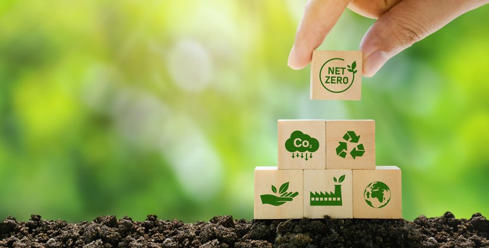

Sustentabilidade: 10 hábitos que ajudam o planeta e o seu bolso

Quando falamos em sustentabilidade, geralmente pensamos no meio ambiente e nas questões relacionadas à reciclagem, por exemplo. No entanto, hábitos sustentáveis vão muito além desse conceito. Hábitos sustentáveis estão muito mais correlacionados a um estilo de vida sustentável, que considera repensar práticas em todos os âmbitos da nossa vida. Essa reflexão permite ter mais clareza do impacto das nossas escolhas para, então, buscar alternativas financeiras, sociais e até mesmo pessoais. Vamos explorar melhor esse conceito e passar a colocar a sustentabilidade em prática? Continue a leitura e amplie seu conhecimento!
O que significa ser mais sustentável?
Ser sustentável vai muito além de preservar o meio ambiente. O conceito abrange um equilíbrio entre o ambiental, o econômico e o social, promovendo práticas que minimizem impactos negativos e garantam um futuro melhor para todos. A sustentabilidade está diretamente ligada ao consumo consciente. Isso significa fazer escolhas responsáveis no dia a dia, priorizando produtos e serviços que respeitam os recursos naturais, reduzem desperdícios e promovem o bem-estar coletivo.
Por que escolher um estilo de vida mais sustentável?
Como falamos anteriormente, não é novidade que os recursos naturais do nosso planeta estão cada vez mais limitados. Um dos dados que representam esse cenário é o Dia da Sobrecarga da Terra. Segundo a WWF Brasil, ele marca o dia do ano em que a demanda da humanidade por recursos naturais supera a capacidade da Terra de produzir ou renovar esses recursos ao longo de 365 dias. Assim, é como se a humanidade passasse a utilizar o “limite” do planeta. Para se ter uma ideia, em 1970, o Dia da Sobrecarga da Terra foi no dia 31 de dezembro, o que representa o equilíbrio entre o que o ser humano consumiu e o que o planeta produziu de recursos.
Em 2021, 50 anos depois, o Dia da Sobrecarga da Terra foi em 29 de julho, o que reforça a necessidade da adoção de hábitos sustentáveis pelas pessoas. Já em 2024, esse dia aconteceu em 1º de agosto e, segundo o WWF, se a humanidade seguisse o mesmo padrão de consumo da população brasileira, o dia de sobrecarga teria acontecido no dia 4 de agosto.
10 hábitos sustentáveis para começar a praticar
Deixe o carro na garagem
Já sabemos que os carros têm grande peso na emissão de gases poluentes na atmosfera. Por isso, quando puder, opte por deixar o carro em casa e saia de bicicleta ou a pé: além de o meio ambiente agradecer, você também tem ganhos na sua saúde.
Economize água em casa
Períodos de seca têm sido cada vez mais recorrentes em diversas regiões do país e do mundo. Esses alertas climáticos reforçam a necessidade de pouparmos o uso da água potável, buscando reduzir o desperdício.
Ao lavar roupas e calçadas, por exemplo, procure reutilizar a água quando possível. Também é importante manter as torneiras fechadas ao escovar os dentes e diminuir o tempo no banho.
Economize energia elétrica
Grande parte da energia gerada em todo o planeta ainda é originada de combustíveis fósseis, que têm um impacto gigantesco na sustentabilidade do planeta. Por isso, é essencial que façamos nossa parte reduzindo ao máximo o desperdício de energia.
Além disso, quando possível, um hábito sustentável que traz ganhos financeiros e ambientais é a troca por energia renovável, como a energia solar.
Incentive a economia local
A globalização é uma realidade em nosso dia a dia: a internet e a evolução tecnológica permitiram a “quebra” de barreiras geográficas. Por outro lado¸ esse movimento também nos fez perceber que, ao incentivarmos a economia local, há um movimento de crescimento mútuo, em que todos os envolvidos ganham. 5. Prefira o design sustentável
Muito além de ter objetos e coisas, a nova geração tem buscado viver experiências. Assim, o design sustentável passa a ser uma escolha recorrente nos hábitos de consumo. Roupas, eletrônicos, sapatos e óculos feitos com materiais sustentáveis estão sendo prioridade na hora da compra.
Esse cenário se estende, por exemplo, ao mercado destinado a animais de estimação, que estão cada vez mais presentes nos lares de todo o mundo.
Aproveite todas as partes dos alimentos
A Organização das Nações Unidas (ONU) informou em relatório que, em 2022, cerca de 830 milhões de pessoas no mundo foram afetadas pela fome. Esse número nos alerta sobre como precisamos repensar nosso consumo alimentar, adotando um hábito sustentável desde o preparo dos alimentos.
Não basta não desperdiçar: é preciso repensar o que ingerimos e consumimos diariamente. Um hábito consciente também passa pela adoção de uma dieta mais natural, com menos conservantes e menos industrializados.
Frutas, vegetais, verduras e legumes são a base de uma alimentação completa e que só traz benefícios ao ser humano: que tal rever o cardápio do dia e incluir esses ingredientes?
Evite comprar por impulso
O consumo não deve ser uma fuga ou um refúgio: deve ser um hábito sustentável para uma necessidade. Assim, refletir sobre as compras que se faz diariamente permite que seja criada a consciência do que é necessário e do que não é. Ao comprar por impulso, outras situações surgem, como o impacto financeiro e o acúmulo de objetos.
Reduza o resíduo eletrônico
Não há como negar que aparelhos eletrônicos fazem parte do nosso dia a dia. Celulares, computadores, tablets e smartwatches estão em nossas rotinas e facilitam muitas tarefas. No entanto, eles também geram lixo eletrônico, que tem um impacto considerável em grande escala. Assim¸ um hábito sustentável é repensar a frequência de compra e troca desses itens e descartá-los de forma correta.
Separe o lixo corretamente
Há muito tempo já convivemos com as lixeiras segmentadas para cada tipo de lixo que produzimos. No entanto, ainda não fazemos o descarte de maneira correta, juntando papel com plástico, por exemplo.A separação do lixo traz benefícios ambientais e financeiros para todos: está mais do que na hora de adotarmos esse hábito!
Reutilize embalagens
A quantidade de plásticos que consumimos é gigante: assim, é interessante que encontremos formas de reutilizar as embalagens de alimentos e de outros itens, no sentido de diminuir a poluição e o desperdício.
Vale lembrar que diversos materiais levam muitos anos para se decompor na natureza!